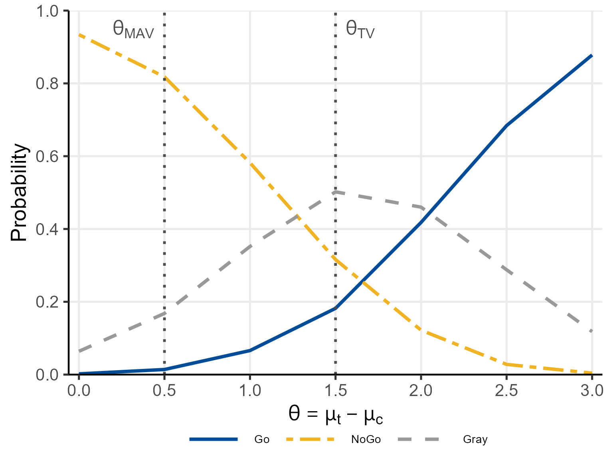
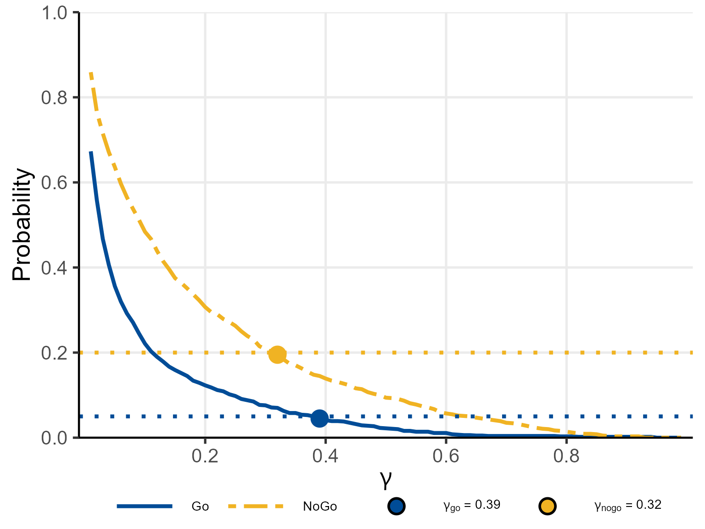

Motivating Scenario
We use a hypothetical Phase IIa proof-of-concept (PoC) trial in moderate-to-severe rheumatoid arthritis (RA). The investigational drug is compared with placebo in a 1:1 randomised controlled trial with patients per group.
Endpoint: change from baseline in DAS28 score (a larger decrease indicates greater improvement).
Clinically meaningful thresholds (posterior probability):
- Target Value () = 1.5 (ambitious target)
- Minimum Acceptable Value () = 0.5 (lower bar)
Null hypothesis threshold (predictive probability): .
Decision thresholds: (Go), (NoGo).
Observed data (used in Sections 2–4): , (treatment); , (control).
1. Bayesian Model: Normal-Inverse-Chi-Squared Conjugate
1.1 Prior Distribution
For group (: treatment, : control), patient (), we model the continuous outcome as
The conjugate prior is the Normal-Inverse-Chi-squared (N-Inv-) distribution:
where
(mu0_t, mu0_c) is the prior mean,
(kappa0_t, kappa0_c)
the prior precision (pseudo-sample size),
(nu0_t, nu0_c)
the prior degrees of freedom, and
(sigma0_t, sigma0_c)
the prior scale.
The vague (Jeffreys) prior is obtained by letting and , which places minimal information on the parameters.
1.2 Posterior Distribution
Given observations with sample mean and sample standard deviation , the posterior parameters are updated as follows:
The marginal posterior of the group mean is a non-standardised -distribution:
Under the vague prior (), this simplifies to
1.3 Posterior of the Treatment Effect
The treatment effect is . Since the two groups are independent, the posterior of is the distribution of the difference of two independent non-standardised -variables:
where the posterior scale is .
The posterior probability that exceeds a threshold ,
is computed by one of three methods described in Section 3.
2. Posterior Predictive Probability
3. Three Computation Methods
3.1 Numerical Integration (NI)
The exact CDF of is expressed as a one-dimensional integral:
where
and
are the CDF and PDF of the non-standardised
-distribution
respectively. This integral is evaluated by
stats::integrate() (adaptive Gauss-Kronrod quadrature) in
ptdiff_NI(). The method is exact but evaluates the integral
once per call and is therefore slow for large-scale simulation.
3.2 Monte Carlo Simulation (MC)
independent samples are drawn from each marginal:
and the probability is estimated as
When called from pbayesdecisionprob1cont() with
simulation replicates, all draws are generated as a single
matrix to avoid loop overhead.
3.3 Moment-Matching Approximation (MM)
The difference is approximated by a single non-standardised -distribution (Yamaguchi et al., 2025, Theorem 1). Let
Then , where
The CDF is evaluated via a single call to stats::pt().
This method requires
,
is exact in the normal limit
(),
and is fully vectorised — making it the recommended method for
large-scale simulation.
3.4 Comparison of the Three Methods
# Observed data (nMC excluded from base list; passed individually per method)
args_base <- list(
prob = 'posterior', design = 'controlled', prior = 'vague',
theta0 = 1.0,
n_t = 15, n_c = 15,
bar_y_t = 3.2, s_t = 2.0,
bar_y_c = 1.1, s_c = 1.8,
m_t = NULL, m_c = NULL,
kappa0_t = NULL, kappa0_c = NULL, nu0_t = NULL, nu0_c = NULL,
mu0_t = NULL, mu0_c = NULL, sigma0_t = NULL, sigma0_c = NULL,
r = NULL,
ne_t = NULL, ne_c = NULL, alpha0e_t = NULL, alpha0e_c = NULL,
bar_ye_t = NULL, se_t = NULL, bar_ye_c = NULL, se_c = NULL
)
p_ni <- do.call(pbayespostpred1cont,
c(args_base, list(CalcMethod = 'NI', nMC = NULL)))
p_mm <- do.call(pbayespostpred1cont,
c(args_base, list(CalcMethod = 'MM', nMC = NULL)))
set.seed(42)
p_mc <- do.call(pbayespostpred1cont,
c(args_base, list(CalcMethod = 'MC', nMC = 10000L)))
cat(sprintf("NI : %.6f (exact)\n", p_ni))
#> NI : 0.069397 (exact)
cat(sprintf("MM : %.6f (approx)\n", p_mm))
#> MM : 0.069397 (approx)
cat(sprintf("MC : %.6f (n_MC=10000)\n", p_mc))
#> MC : 0.073400 (n_MC=10000)4. Study Designs
4.1 Controlled Design
Standard parallel-group RCT with observed data from both treatment (, , ) and control (, , ) groups. Both posteriors are updated from the PoC data.
Vague prior — posterior probability:
# P(mu_t - mu_c > theta_TV | data) and P(mu_t - mu_c <= theta_MAV | data)
p_tv <- pbayespostpred1cont(
prob = 'posterior', design = 'controlled', prior = 'vague',
CalcMethod = 'NI', theta0 = 1.5, nMC = NULL,
n_t = 15, n_c = 15,
bar_y_t = 3.2, s_t = 2.0,
bar_y_c = 1.1, s_c = 1.8,
m_t = NULL, m_c = NULL,
kappa0_t = NULL, kappa0_c = NULL, nu0_t = NULL, nu0_c = NULL,
mu0_t = NULL, mu0_c = NULL, sigma0_t = NULL, sigma0_c = NULL,
r = NULL,
ne_t = NULL, ne_c = NULL, alpha0e_t = NULL, alpha0e_c = NULL,
bar_ye_t = NULL, se_t = NULL, bar_ye_c = NULL, se_c = NULL,
lower.tail = FALSE
)
p_mav <- pbayespostpred1cont(
prob = 'posterior', design = 'controlled', prior = 'vague',
CalcMethod = 'NI', theta0 = 0.5, nMC = NULL,
n_t = 15, n_c = 15,
bar_y_t = 3.2, s_t = 2.0,
bar_y_c = 1.1, s_c = 1.8,
m_t = NULL, m_c = NULL,
kappa0_t = NULL, kappa0_c = NULL, nu0_t = NULL, nu0_c = NULL,
mu0_t = NULL, mu0_c = NULL, sigma0_t = NULL, sigma0_c = NULL,
r = NULL,
ne_t = NULL, ne_c = NULL, alpha0e_t = NULL, alpha0e_c = NULL,
bar_ye_t = NULL, se_t = NULL, bar_ye_c = NULL, se_c = NULL,
lower.tail = FALSE
)
cat(sprintf("P(theta > theta_TV | data) = %.4f -> Go criterion: >= 0.80? %s\n",
p_tv, ifelse(p_tv >= 0.80, "YES", "NO")))
#> P(theta > theta_TV | data) = 0.7940 -> Go criterion: >= 0.80? NO
cat(sprintf("P(theta <= theta_MAV | data) = %.4f -> NoGo criterion: >= 0.20? %s\n",
1 - p_mav, ifelse((1 - p_mav) >= 0.20, "YES", "NO")))
#> P(theta <= theta_MAV | data) = 0.0178 -> NoGo criterion: >= 0.20? NO
cat(sprintf("Decision: %s\n",
ifelse(p_tv >= 0.80 & (1 - p_mav) < 0.20, "Go",
ifelse(p_tv < 0.80 & (1 - p_mav) >= 0.20, "NoGo",
ifelse(p_tv >= 0.80 & (1 - p_mav) >= 0.20, "Miss", "Gray")))))
#> Decision: GrayN-Inv- informative prior:
Historical knowledge suggests treatment mean
and control mean
with prior pseudo-sample size
(kappa0_t, kappa0_c) and degrees of freedom
(nu0_t, nu0_c).
p_tv_inf <- pbayespostpred1cont(
prob = 'posterior', design = 'controlled', prior = 'N-Inv-Chisq',
CalcMethod = 'NI', theta0 = 1.5, nMC = NULL,
n_t = 15, n_c = 15,
bar_y_t = 3.2, s_t = 2.0,
bar_y_c = 1.1, s_c = 1.8,
m_t = NULL, m_c = NULL,
kappa0_t = 5, kappa0_c = 5,
nu0_t = 5, nu0_c = 5,
mu0_t = 3.0, mu0_c = 1.0,
sigma0_t = 2.0, sigma0_c = 1.8,
r = NULL,
ne_t = NULL, ne_c = NULL, alpha0e_t = NULL, alpha0e_c = NULL,
bar_ye_t = NULL, se_t = NULL, bar_ye_c = NULL, se_c = NULL,
lower.tail = FALSE
)
cat(sprintf("P(theta > theta_TV | data, N-Inv-Chisq prior) = %.4f\n", p_tv_inf))
#> P(theta > theta_TV | data, N-Inv-Chisq prior) = 0.8274Posterior predictive probability (future Phase III: ):
p_pred <- pbayespostpred1cont(
prob = 'predictive', design = 'controlled', prior = 'vague',
CalcMethod = 'NI', theta0 = 1.0, nMC = NULL,
n_t = 15, n_c = 15, m_t = 60, m_c = 60,
bar_y_t = 3.2, s_t = 2.0,
bar_y_c = 1.1, s_c = 1.8,
kappa0_t = NULL, kappa0_c = NULL, nu0_t = NULL, nu0_c = NULL,
mu0_t = NULL, mu0_c = NULL, sigma0_t = NULL, sigma0_c = NULL,
r = NULL,
ne_t = NULL, ne_c = NULL, alpha0e_t = NULL, alpha0e_c = NULL,
bar_ye_t = NULL, se_t = NULL, bar_ye_c = NULL, se_c = NULL,
lower.tail = FALSE
)
cat(sprintf("Predictive probability (m_t = m_c = 60) = %.4f\n", p_pred))
#> Predictive probability (m_t = m_c = 60) = 0.99664.2 Uncontrolled Design (Single-Arm)
When no concurrent control group is enrolled, the control distribution is specified from external knowledge:
- Hypothetical control mean:
(
mu0_c, fixed scalar) - Variance scaling: , so assumes equal variances
The posterior of the control mean is not updated from observed data; only the treatment posterior is updated.
p_unctrl <- pbayespostpred1cont(
prob = 'posterior', design = 'uncontrolled', prior = 'vague',
CalcMethod = 'MM', theta0 = 1.5, nMC = NULL,
n_t = 15, n_c = NULL,
bar_y_t = 3.2, s_t = 2.0,
bar_y_c = NULL, s_c = NULL,
m_t = NULL, m_c = NULL,
kappa0_t = NULL, kappa0_c = NULL, nu0_t = NULL, nu0_c = NULL,
mu0_t = NULL, mu0_c = 1.0, # hypothetical control mean
sigma0_t = NULL, sigma0_c = NULL,
r = 1.0, # equal variance assumption
ne_t = NULL, ne_c = NULL, alpha0e_t = NULL, alpha0e_c = NULL,
bar_ye_t = NULL, se_t = NULL, bar_ye_c = NULL, se_c = NULL,
lower.tail = FALSE
)
cat(sprintf("P(theta > theta_TV | data, uncontrolled) = %.4f\n", p_unctrl))
#> P(theta > theta_TV | data, uncontrolled) = 0.81844.3 External Design (Power Prior)
In the external design, historical data from a prior study are incorporated via a power prior with borrowing weight . The two prior specifications yield different posterior update formulae.
Vague prior (prior = 'vague')
For group with external patients, external mean , and external SD , the posterior parameters after combining the power prior with the PoC data are given by Theorem 4 of Huang et al. (2025):
The marginal posterior of is then
Setting corresponds to full borrowing; as the result recovers the vague-prior posterior from the current data alone.
N-Inv-
prior (prior = 'N-Inv-Chisq')
When an informative N-Inv- initial prior is specified, the power prior is first formed by combining the initial prior with the discounted external data (Theorem 1 of Huang et al., 2025):
This intermediate result is then updated with the PoC data by standard conjugate updating (Theorem 2 of Huang et al., 2025):
The marginal posterior of is then
Example: external control design, vague prior
Here,
(ne_c),
(bar_ye_c),
(se_c),
(alpha0e_c) (50% borrowing from external control):
p_ext <- pbayespostpred1cont(
prob = 'posterior', design = 'external', prior = 'vague',
CalcMethod = 'MM', theta0 = 1.5, nMC = NULL,
n_t = 15, n_c = 15,
bar_y_t = 3.2, s_t = 2.0,
bar_y_c = 1.1, s_c = 1.8,
m_t = NULL, m_c = NULL,
kappa0_t = NULL, kappa0_c = NULL, nu0_t = NULL, nu0_c = NULL,
mu0_t = NULL, mu0_c = NULL, sigma0_t = NULL, sigma0_c = NULL,
r = NULL,
ne_t = NULL, ne_c = 20L, alpha0e_t = NULL, alpha0e_c = 0.5,
bar_ye_t = NULL, se_t = NULL, bar_ye_c = 0.9, se_c = 1.8,
lower.tail = FALSE
)
cat(sprintf("P(theta > theta_TV | data, external control design, alpha=0.5) = %.4f\n",
p_ext))
#> P(theta > theta_TV | data, external control design, alpha=0.5) = 0.8517Effect of the borrowing weight: varying from 0 to 1 shows how external data influence the posterior.
# alpha0e_c must be in (0, 1]; start from 0.01 to avoid validation error
alpha_seq <- c(0.01, seq(0.1, 1.0, by = 0.1))
p_alpha <- sapply(alpha_seq, function(a) {
pbayespostpred1cont(
prob = 'posterior', design = 'external', prior = 'vague',
CalcMethod = 'MM', theta0 = 1.5, nMC = NULL,
n_t = 15, n_c = 15,
bar_y_t = 3.2, s_t = 2.0,
bar_y_c = 1.1, s_c = 1.8,
m_t = NULL, m_c = NULL,
kappa0_t = NULL, kappa0_c = NULL, nu0_t = NULL, nu0_c = NULL,
mu0_t = NULL, mu0_c = NULL, sigma0_t = NULL, sigma0_c = NULL,
r = NULL,
ne_t = NULL, ne_c = 20L, alpha0e_t = NULL, alpha0e_c = a,
bar_ye_t = NULL, se_t = NULL, bar_ye_c = 0.9, se_c = 1.8,
lower.tail = FALSE
)
})
data.frame(alpha_ec = alpha_seq, P_gt_TV = round(p_alpha, 4))
#> alpha_ec P_gt_TV
#> 1 0.01 0.7994
#> 2 0.10 0.8133
#> 3 0.20 0.8259
#> 4 0.30 0.8361
#> 5 0.40 0.8446
#> 6 0.50 0.8517
#> 7 0.60 0.8577
#> 8 0.70 0.8629
#> 9 0.80 0.8674
#> 10 0.90 0.8713
#> 11 1.00 0.87485. Operating Characteristics
5.1 Definition
For given true parameters , the operating characteristics are the probabilities of each decision outcome under the Go/NoGo/Gray/Miss rule with thresholds . These are estimated by Monte Carlo simulation over replicates:
where
are evaluated for the
-th
simulated dataset
.
A Miss
(
AND
)
indicates an inconsistent threshold configuration and triggers an error
by default (error_if_Miss = TRUE).
5.2 Example: Controlled Design, Posterior Probability
oc_ctrl <- pbayesdecisionprob1cont(
nsim = 500L,
prob = 'posterior',
design = 'controlled',
prior = 'vague',
CalcMethod = 'MM',
theta_TV = 1.5, theta_MAV = 0.5, theta_NULL = NULL,
nMC = NULL,
gamma_go = 0.80, gamma_nogo = 0.20,
n_t = 15, n_c = 15,
m_t = NULL, m_c = NULL,
kappa0_t = NULL, kappa0_c = NULL, nu0_t = NULL, nu0_c = NULL,
mu0_t = NULL, mu0_c = NULL, sigma0_t = NULL, sigma0_c = NULL,
mu_t = seq(1.0, 4.0, by = 0.5),
mu_c = 1.0,
sigma_t = 2.0,
sigma_c = 2.0,
r = NULL,
ne_t = NULL, ne_c = NULL, alpha0e_t = NULL, alpha0e_c = NULL,
bar_ye_t = NULL, se_t = NULL, bar_ye_c = NULL, se_c = NULL,
error_if_Miss = TRUE, Gray_inc_Miss = FALSE,
seed = 42L
)
print(oc_ctrl)
#> Go/NoGo/Gray Decision Probabilities (Single Continuous Endpoint)
#> ----------------------------------------------------------------
#> Probability type : posterior
#> Design : controlled
#> Prior : vague
#> Calc method : MM
#> Simulations : nsim = 500
#> Threshold(s) : TV = 1.5, MAV = 0.5
#> Go threshold : gamma_go = 0.8
#> NoGo threshold : gamma_nogo = 0.2
#> Sample size : n_t = 15, n_c = 15
#> True SD : sigma_t = 2, sigma_c = 2
#> Miss handling : error_if_Miss = TRUE, Gray_inc_Miss = FALSE
#> Seed : 42
#> ----------------------------------------------------------------
#> mu_t mu_c Go Gray NoGo
#> 1.0 1 0.002 0.064 0.934
#> 1.5 1 0.014 0.168 0.818
#> 2.0 1 0.066 0.352 0.582
#> 2.5 1 0.182 0.502 0.316
#> 3.0 1 0.418 0.460 0.122
#> 3.5 1 0.684 0.288 0.028
#> 4.0 1 0.878 0.118 0.004
#> ----------------------------------------------------------------
plot(oc_ctrl, base_size = 20)
The same function supports design = 'uncontrolled' (with
arguments mu0_c and r),
design = 'external' (with power prior arguments
ne_c, alpha0e_c, bar_ye_c,
se_c), and prob = 'predictive' (with future
sample size arguments m_t, m_c and
theta_NULL). The function signature and output format are
identical across all combinations.
6. Optimal Threshold Search
6.1 Objective
The getgamma1cont() function finds the optimal pair
by grid search over
.
The two thresholds are calibrated independently under separate
scenarios:
-
:
selected so that
satisfies a criterion against a target value (e.g.,
)
under the Go-calibration scenario (
mu_t_go,mu_c_go,sigma_t_go,sigma_c_go; typically the null scenario ). -
:
selected so that
satisfies a criterion (e.g.,
)
under the NoGo-calibration scenario (
mu_t_nogo,mu_c_nogo,sigma_t_nogo,sigma_c_nogo; typically the alternative scenario).
The search uses a two-stage strategy:
Stage 1 (Simulate once): datasets are generated from the true parameter distribution and the probabilities and are computed for each replicate — independently of .
Stage 2 (Sweep over ): for each candidate , and are computed as empirical proportions over the precomputed indicator values without further probability evaluations.
6.2 Example: Controlled Design, Posterior Probability
res_gamma <- getgamma1cont(
nsim = 1000L,
prob = 'posterior',
design = 'controlled',
prior = 'vague',
CalcMethod = 'MM',
theta_TV = 1.5, theta_MAV = 0.5, theta_NULL = NULL,
nMC = NULL,
mu_t_go = 1.0, mu_c_go = 1.0, # null scenario: no treatment effect
sigma_t_go = 2.0, sigma_c_go = 2.0,
mu_t_nogo = 2.5, mu_c_nogo = 1.0,
sigma_t_nogo = 2.0, sigma_c_nogo = 2.0,
target_go = 0.05, target_nogo = 0.20,
n_t = 15L, n_c = 15L, m_t = NULL, m_c = NULL,
kappa0_t = NULL, kappa0_c = NULL, nu0_t = NULL, nu0_c = NULL,
mu0_t = NULL, mu0_c = NULL, sigma0_t = NULL, sigma0_c = NULL,
r = NULL,
ne_t = NULL, ne_c = NULL, alpha0e_t = NULL, alpha0e_c = NULL,
bar_ye_t = NULL, bar_ye_c = NULL, se_t = NULL, se_c = NULL,
gamma_grid = seq(0.01, 0.99, by = 0.01),
seed = 42L
)
plot(res_gamma, base_size = 20)
The same function supports design = 'uncontrolled' (with
mu_t_go, mu_t_nogo, mu0_c, and
r; set mu_c_go and mu_c_nogo to
NULL), design = 'external' (with power prior
arguments), and prob = 'predictive' (with
theta_NULL, m_t, and m_c). The
calibration plot and the returned
gamma_go/gamma_nogo values are available for
all combinations.
7. Summary
This vignette covered single continuous endpoint analysis in BayesianQDM:
- Bayesian model: N-Inv- conjugate posterior (vague and informative priors) with explicit update formulae for , , , and .
- Posterior and predictive distributions: marginal -distributions for and , with explicit scale expressions.
- Three computation methods: NI (exact), MC (simulation), MM (moment-matching approximation; Yamaguchi et al., 2025, Theorem 1); MM requires and is recommended for large-scale simulation.
- Three study designs: controlled (both groups observed), uncontrolled ( and fixed from prior knowledge), external design (power prior with borrowing weight ; vague prior follows Theorem 4 of Huang et al. (2025), N-Inv- prior follows Theorems 1–2 of Huang et al. (2025)).
- Operating characteristics: Monte Carlo estimation of , , across true parameter scenarios.
- Optimal threshold search: two-stage precompute-then-sweep strategy
in
getgamma1cont()with user-specified criteria and selection rules.
See vignette("single-binary") for the analogous binary
endpoint analysis.